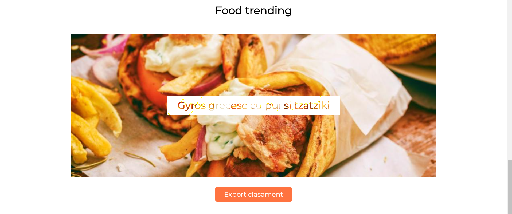

Home page-ul este pargina ce va intampina la vizitarea site-ului. Aceasta pagina reprezinta o imagine de ansamblu asupra aplicatiei web.
Odata ajunsi pe pagina,in partea de sus a ecranului puteti observa meniul de navigare pe pagina.In exemplul de mai sus puteti observa cum arata bara de navigatie, cu cele 4 butoane, a unui utilizator deja logat, pe pagina principala si nu numai le este permis pana si utilizator neautentificati sa navigheze. Apasand pe unul din cele 4 butoane veti fi redirectionati pe pagina aferenta a acestuia.
Printre recomandarile disponibile pe pagina, in partea de jos veti gasi un top al produselor dupa cum puteti vedea in imaginea de mai sus. Acest top este generat dinamic dupa numarul de aprecieri din baza de date, puteti naviga prin acest top folosindu-va de butoanele laterale. Tot aici este disponibil si butonul de export al topului in format RSS.
Urmatoare pagina si probabil cea mai importanta este pagina de categorii, pagina in care aveti libertatea de a cauta produsele dorite cu ajutorul unui SEARCH BAR interactiv sau cu ajutorul unor filtre prestabilite.
Dupa cum puteti vedea in imaginea atasata produsele au in partea dreapta butoanele de adaugare la lista de cumparaturi, respectiv la favorite. Iar in partea de jos butonul "Citeste mai mult..", buton ce va duce la pagina specifica mancarii.
Pagina specifica mancarii este pagina un puteti vedea diferite informatii despre mancare cum ar fi numele, categoria, pretul si restaurantul unde puteti gasi felul de mancare.
Aici puteti gasi diverse informatii despre FORG si echipa ce sta in spatele acestui proiect. In acelasi timp in partea de jos a paginii gasiti o sectiune ce va permite sa ne contactati si sa ne spuneti parerile dumneavoastra. Desigur, puteti face asta chiar si fara a fi logati pe site.
Pagina de profil este pagina ce face legatura cu lista dumneavoastra personalizata de cumparaturi si cu lista alimentelor favorite. In acelasi timp pe pagina de profil puteti vedea o multitudine de date despre profilul dumneavostra, spre exemplu numele, adresa de email , numarul de telefon si grupurile.
Pe pagina de statistici puteti observa diverse statistici actualizate in timp real despre produsele noastre. Iar apasand unul dintre butoanele portocalii puteti schimba orientarea graficului.
Este pagina ce permite autentifacarea si in acelasti timp pagina ce face legatura cu modulul de recuperare al parolei.
Pagina de Sign Up, ultima pagina prezentata in acest ghid, este pagina ce permine crearea de conturi prin completarea formularului gasit acolo.